A colônia é uma relação intra-específica harmônica onde um grupo de organismos da mesma espécie vive fisicamente unido e interdependente, beneficiando-se mutuamente na busca por sobrevivência.
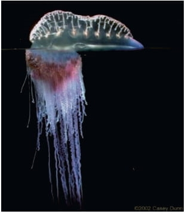A sociedade é uma relação ecológica intraespecífica em que os organismos vivem em grupos organizados de forma cooperativa, sem estarem ligados fisicamente.
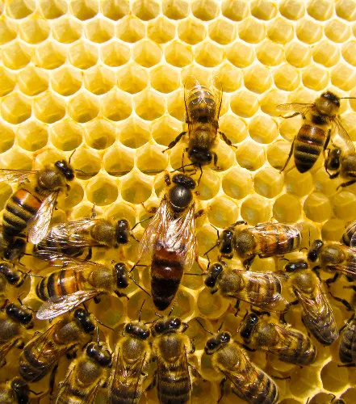O mutualismo é um tipo de relação ecológica onde duas espécies diferentes interagem e ambas se beneficiam da associação, no qual uma não sobreviveria sem a presença do outro.
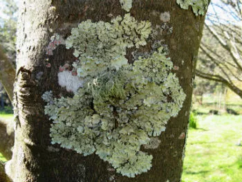A protocooperação é a associação entre indivíduos de espécies diferentes em que ambos se beneficiam, mas a existência não é obrigatória.
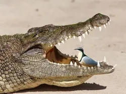É a associação entre espécies diferentes, na qual uma espécie é beneficiada sem causar prejuízo ou benefício a outra.
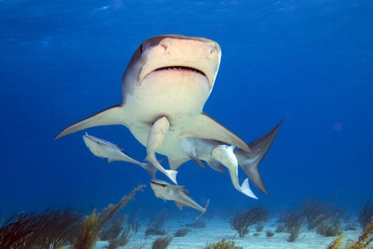A competição Intra-específica ocorre entre indivíduos da mesma espécie, e é motivada por disputas por território, alimento e companheiro sexual.
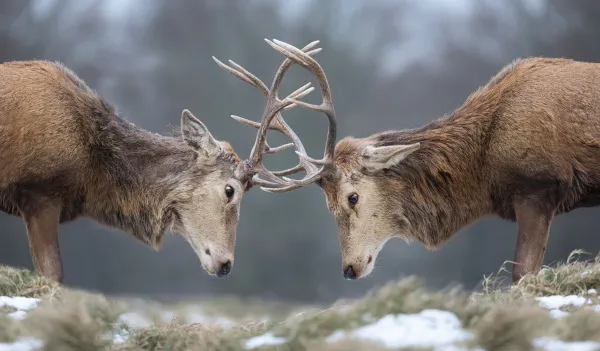O canibalismo é uma relação na qual um organismo se alimenta de outro da mesma espécie.
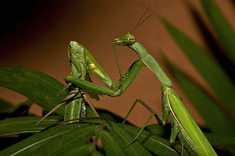A competição Interespecífica corre entre indivíduos de espécies diferentes. Geralmente ocorre quando duas espécies apresentam sobreposição de nichos ecológicos.

O predatismo ocorre quando organismo predadores matam indivíduos da população de presas para deles se alimentarem.
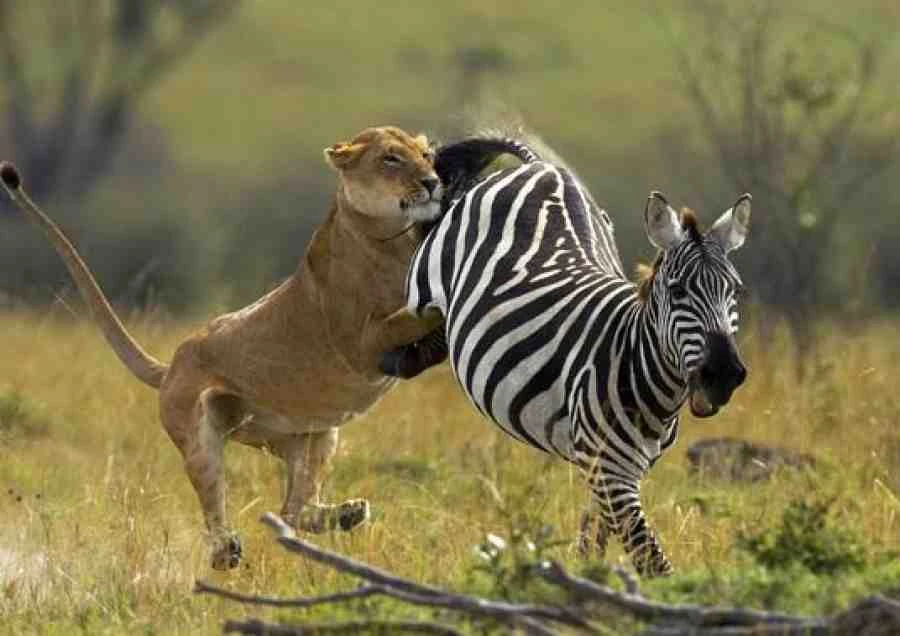Relação na qual uma das espécies, o parasita, obtêm nutrientes e moradia no corpo de indivíduos vivos da espécie hospedeira.
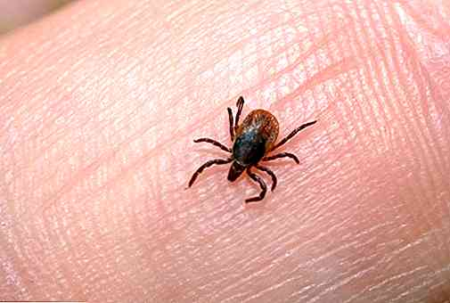O amensalismo, que também é chamado de antibiose, uma espécie denominada inibidora libera substâncias que impedem o crescimento e a reprodução de outra denominada amensal.
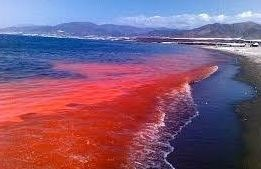O esclavagismo é uma relação na qual uma espécie se beneficia da outra fazendo com que a outra saia prejudicada.
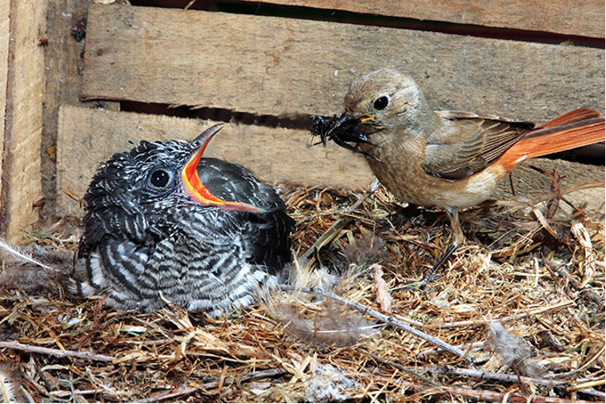Forma de adaptação na qual um organismo se parece com o ambiente, confundindo-se com ele na cor e/ou na forma.

Forma de adaptação na qual uma espécie se beneficia por assemelhar-se a outras.
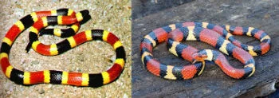Forma de adaptação na qual uma espécie exibe cores chamativas para advertir seus possíveis predadores quanto a seu paladar desagradável ou pelo veneno que possui.
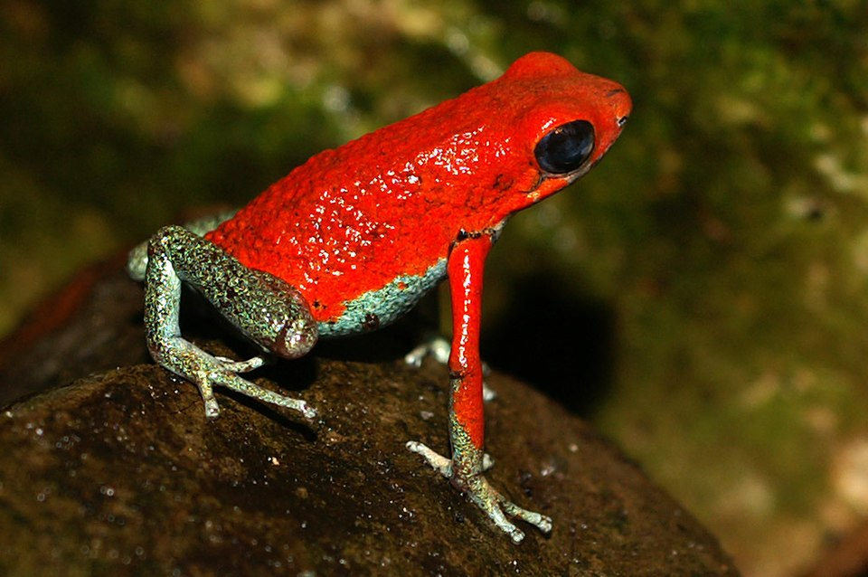